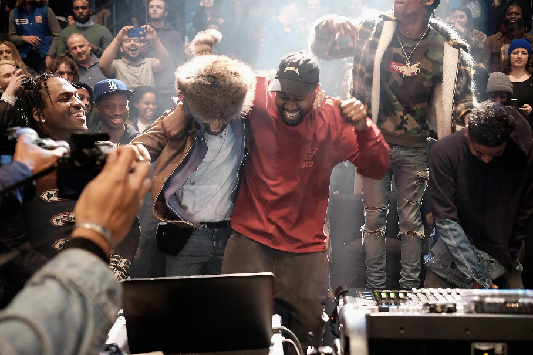

Welcome!
I love music! I love sharing it, discovering new music, and the memories and moments attached to them! I made a list of some of my favorite albums and songs ever, including moments attached to them and why they are so special to me. My favorite genre is Hip Hop, but I also like Pop, Alternative, Rock, Soul, and Latin music. Most of these won’t be in any order. These are all songs/albums that I also recommend. I hope you like them! I also own the vinyls for UTOPIA, Flower Boy, House of Balloons, Hurry Up Tomorrow, and Days Before Rodeo.